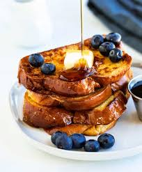

French Toast

Description
French toast is a timeless breakfast favorite made by dipping slices of bread—usually brioche or challah—into a rich egg mixture and pan-frying until golden and crisp. Soft on the inside and perfectly caramelized on the outside, it’s often topped with syrup, fresh berries, or powdered sugar.
Whether for a cozy morning or a weekend brunch, French toast brings warmth, comfort, and a touch of indulgence to the table.
Prep & Cook Time:
- Prep Time: 5 minutes
- Cook Time: 10 minutes
- Total Time: 15 minutes
- Servings: 2–3 people
👇 Start your journey with our Classic French Toast recipe below!
Ingredients:
- Pinch of salt
- ½ tsp ground cinnamon
- 1 tbsp sugar (optional, for added sweetness)
- 2 large eggs
- ½ cup milk (any variety)
- Butter or oil, for frying
- 1 tsp vanilla extract
- 4 slices thick-cut bread (brioche, challah, sourdough, or white bread)
Toppings (Optional):
- Maple syrup
- Powdered sugar
- Fresh berries
- Whipped cream
- Sliced bananas
- A small pat of butter
French Toast Step-by-Step Instructions see below:
Instructions
- Make the custard base
In a medium bowl, whisk together the eggs, milk, vanilla, cinnamon, sugar (if using), and a pinch of salt until smooth
- Soak the bread
Dip each slice of bread into the mixture, allowing it to soak for a few seconds per side. Be gentle to avoid breaking the slices.
- Cook the French toast
Heat a nonstick skillet or griddle over medium heat. Add a little butter or oil.
Place soaked bread in the pan and cook for 2–3 minutes per side, or until golden brown and crisp.
- Serve warm
Stack the French toast on a plate and top with your favorite additions—syrup, fruit, whipped cream, or a dusting of powdered sugar.
Tips:
- Day-old or slightly stale bread works best—it absorbs the custard without getting soggy.
- For extra flavor, try using a dash of nutmeg or a flavored extract like almond or hazelnut.
- Want a richer version? Use half-and-half or cream instead of milk.
Whether you enjoy it stacked high with berries and maple syrup or kept simple with a dusting of sugar and a pat of butter, French toast is the kind of comfort food that brings joy to any table. It's easy to make, endlessly customizable, and perfect for lazy weekends, special brunches, or even a cozy breakfast-for-dinner treat. With its golden crust, soft custardy center, and that irresistible aroma of vanilla and cinnamon, this dish is sure to become a favorite in your kitchen.